# Install packages
if (!requireNamespace("ggplot2", quietly = TRUE)) {
install.packages("ggplot2")
}
if (!requireNamespace("hrbrthemes", quietly = TRUE)) {
install.packages("hrbrthemes")
}
if (!requireNamespace("viridis", quietly = TRUE)) {
install.packages("viridis")
}
if (!requireNamespace("dplyr", quietly = TRUE)) {
install.packages("dplyr")
}
if (!requireNamespace("tidyr", quietly = TRUE)) {
install.packages("tidyr")
}
if (!requireNamespace("tibble", quietly = TRUE)) {
install.packages("tibble")
}
if (!requireNamespace("RColorBrewer", quietly = TRUE)) {
install.packages("RColorBrewer")
}
if (!requireNamespace("streamgraph", quietly = TRUE)) {
install.packages("streamgraph")
}
# Load packages
library(ggplot2)
library(hrbrthemes)
library(viridis)
library(dplyr)
library(tidyr)
library(tibble)
library(RColorBrewer)
library(streamgraph)Grouped and Stacked Barplot
Grouped bar charts, or clustered bar charts, extend the functionality of univariate or single-category bar charts to multivariate bar charts. In these charts, bars are grouped according to their categories, and colors represent distinguishing factors for other categorical variables. The bars are positioned to cater to a group or primary group, with colors representing secondary categories. Grouped bar charts are particularly suitable for displaying the distribution of multiple groups of categorical data across different variables, facilitating the observation and comparison of differences between different categorical variables across different measures.
Example
Grouped bar chart
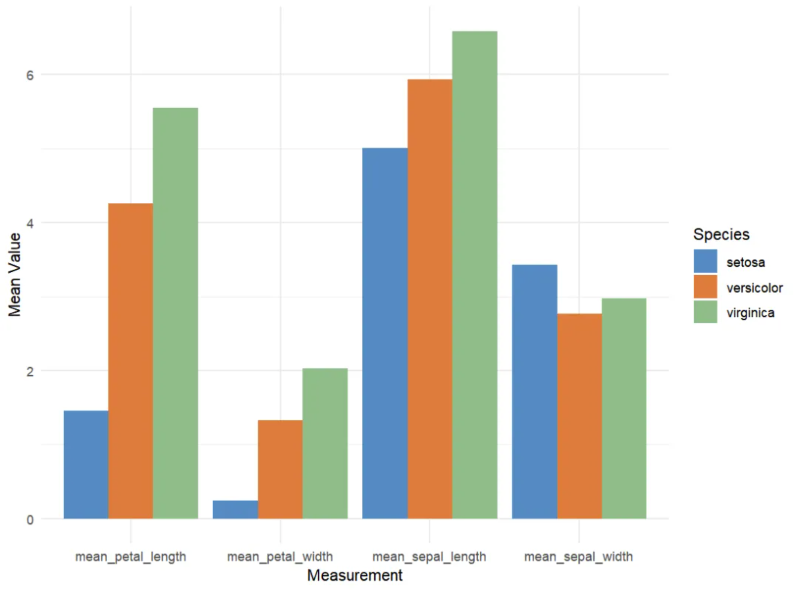
This is a grouped bar chart showing the average values (calyx length, calyx width, petal length, and petal width) of three iris species (setosa, versicolor, and virginica) in the iris dataset across four different measures. The x-axis represents the four measures, and the y-axis (mean value) represents the average of these measures. The different colored bars (Species) represent the three iris species: setosa (red), versicolor (green), and virginica (blue). For each measure, the average values for the three flowers are displayed side-by-side in a bar chart.
Stacked Bar Chart

This is a stacked bar chart showing the average values of three iris species (setosa, versicolor, and virginica) across four different measures in the iris dataset. The bars are stacked, so the total height shown is the sum of the averages for all three species. The x-axis (Measurement): Similar to the previous chart, it represents the four measurements (calyx length, calyx width, petal length, and petal width). The y-axis (Mean Value): Represents the overall average of these measurements (the stacked averages of all species). Different colors represent the different iris species: setosa (red), versicolor (green), and virginica (blue). The total bar height for each measurement represents the overall mean for all three species, while the different colors within the bars represent the contribution of each species to that measurement.
Setup
System Requirements: Cross-platform (Linux/MacOS/Windows)
Programming Language: R
Dependencies:
ggplot2;hrbrthemes;viridis;dplyr;tidyr;tibble;RColorBrewer;streamgraph
sessioninfo::session_info("attached")─ Session info ───────────────────────────────────────────────────────────────
setting value
version R version 4.5.2 (2025-10-31)
os Ubuntu 24.04.3 LTS
system x86_64, linux-gnu
ui X11
language (EN)
collate C.UTF-8
ctype C.UTF-8
tz UTC
date 2025-12-24
pandoc 3.1.3 @ /usr/bin/ (via rmarkdown)
quarto 1.8.26 @ /usr/local/bin/quarto
─ Packages ───────────────────────────────────────────────────────────────────
package * version date (UTC) lib source
dplyr * 1.1.4 2023-11-17 [1] RSPM
ggplot2 * 4.0.1 2025-11-14 [1] RSPM
hrbrthemes * 0.9.2 2025-11-02 [1] Github (hrbrmstr/hrbrthemes@d3fd029)
RColorBrewer * 1.1-3 2022-04-03 [1] RSPM
streamgraph * 0.9.0 2025-11-02 [1] Github (hrbrmstr/streamgraph@76f7173)
tibble * 3.3.0 2025-06-08 [1] RSPM
tidyr * 1.3.2 2025-12-19 [1] RSPM
viridis * 0.6.5 2024-01-29 [1] RSPM
viridisLite * 0.4.2 2023-05-02 [1] RSPM
[1] /home/runner/work/_temp/Library
[2] /opt/R/4.5.2/lib/R/site-library
[3] /opt/R/4.5.2/lib/R/library
* ── Packages attached to the search path.
──────────────────────────────────────────────────────────────────────────────Data Preparation
We used the built-in R dataset iris and TCGA-CHOL.methylation450.tsv from the UCSC Xena website (UCSC Xena (xenabrowser.net)).
# iris
iris_means <- iris %>%
group_by(Species) %>%
summarise(
mean_sepal_length = mean(Sepal.Length),
mean_sepal_width = mean(Sepal.Width),
mean_petal_length = mean(Petal.Length),
mean_petal_width = mean(Petal.Width)
) # Calculate the mean of the four columns for each species.
iris_means_long <- iris_means %>%
pivot_longer(
cols = starts_with("mean"),
names_to = "Measurement",
values_to = "Value"
)
iris_means_df <- as.data.frame(iris_means) %>%
column_to_rownames(var = "Species")
iris_matrix <- as.matrix(iris_means_df)
iris_percentage <- apply(iris_matrix, 2, function(x) { x * 100 / sum(x, na.rm = TRUE) })
# TCGA-CHOL.methylation450
TCGA_methylation <- readr::read_tsv("https://bizard-1301043367.cos.ap-guangzhou.myqcloud.com/TCGA-CHOL.methylation450_.tsv")
methylation_subset <- TCGA_methylation[c(5:9),c(4:13)]
methylation_subset <- as.data.frame(methylation_subset)
rownames(methylation_subset) <- c("cg236", "cg289", "cg292", "cg321", "cg363")
colnames(methylation_subset) <- substr(colnames(methylation_subset), 9, 12)
methylation_long <- methylation_subset %>%
rownames_to_column(var = "Composite") %>%
pivot_longer(cols = -Composite, names_to = "sample", values_to = "value")
methylation_long$sample <- as.numeric(factor(methylation_long$sample, levels = unique(methylation_long$sample))) # Convert the sample column to ordered values.
# TCGA-STAD.star_counts
TCGA_star <- readr::read_tsv("https://bizard-1301043367.cos.ap-guangzhou.myqcloud.com/TCGA-STAD.star_counts.tsv")
selected_rows <- TCGA_star[TCGA_star$Ensembl_ID %in% c("ENSG00000141510.18",
"ENSG00000141736.14",
"ENSG00000121879.6",
"ENSG00000133703.13"), ]
selected_rows <- as.data.frame(selected_rows)
rownames(selected_rows) <- c("PIK3CA", "KRAS", "TP53", "HER2")
selected_counts <- selected_rows[,-1]
tumor_counts <- selected_counts %>% select(ends_with("01A"))
normal_counts <- selected_counts %>% select(ends_with("11A"))
mean_tumor <- rowMeans(tumor_counts, na.rm = TRUE)
mean_normal <- rowMeans(normal_counts, na.rm = TRUE)
mean_values <- data.frame(mean_tumor, mean_normal)
mean_expression_long <- mean_values %>%
rownames_to_column("Gene") %>%
pivot_longer(cols = -Gene,
names_to = "Measurement",
values_to = "Mean_Value")Visualization
1. ggplot2 (using iris data)
The ggplot2 package is probably the best choice for building grouped and stacked bar charts. The input dataframe needs to have two categorical variables, which will be passed to the x and fill parameters of the aes() function. Switching from grouped to stacked charts is very easy thanks to the position parameter.
1.1 Grouped bar chart
# Grouped bar chart
p <- ggplot(iris_means_long, aes(fill = Species, y = Value, x = Measurement)) +
geom_bar(position = "dodge", stat = "identity") +
scale_fill_manual(values = c("#4A8CC3", "#E37939", "#8FBC89")) +
labs(x = "Measurement",
y = "Mean Value") +
theme_minimal()
p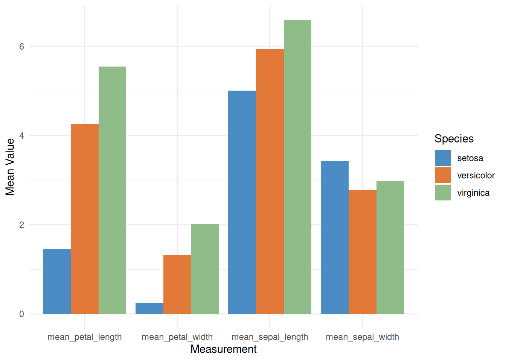
This grouped bar chart displays the average values of three iris species (setosa, versicolor, and virginica) in the iris dataset across four different measurements: sepal length, sepal width, petal length, and petal width. For each measurement, the average values for the three species are shown side-by-side in a bar chart.
1.2 Stacked Bar Chart
Stacked bar charts are very similar to grouped bar charts. However, in a stacked bar chart, the subgroups are displayed overlapping each other, rather than side by side. You can achieve a stacked bar chart by changing the position parameter of the grouped bar chart to stack.
# Stacked Bar Chart
p <- ggplot(iris_means_long, aes(fill = Species, y = Value, x = Measurement)) +
geom_bar(position = "stack", stat = "identity") +
scale_fill_manual(values = c("#4A8CC3", "#E37939", "#8FBC89")) +
labs(x = "Measurement",
y = "Mean Value") +
theme_minimal()
p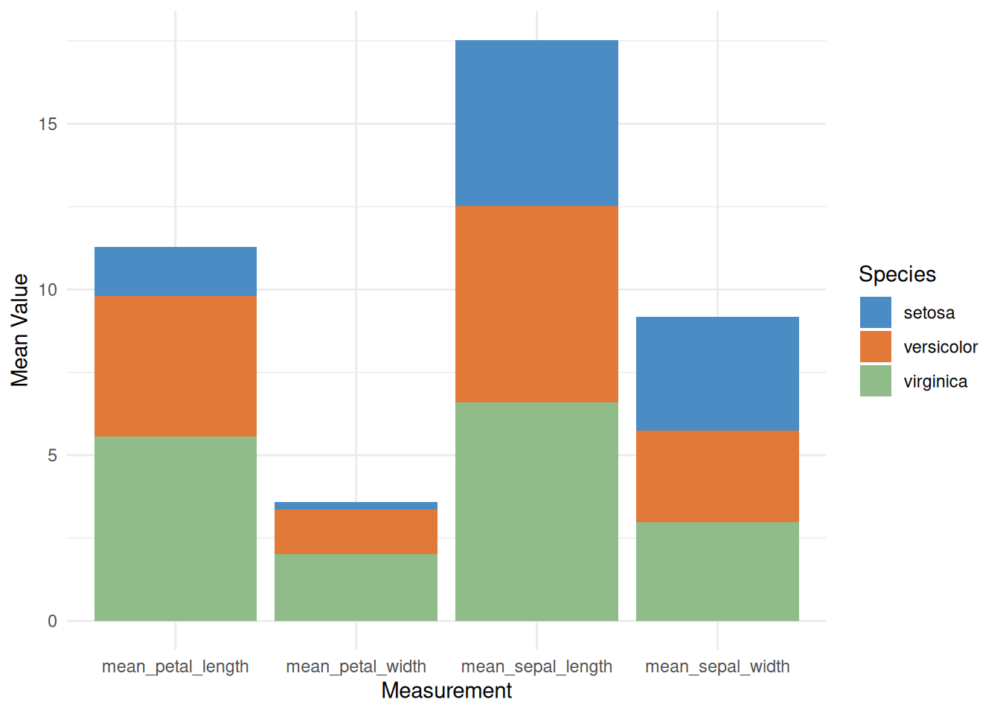
This is a stacked bar chart showing the average values of three iris species (setosa, versicolor, and virginica) across four different measurements (calyx length, calyx width, petal length, and petal width). Each bar represents a measurement, and the different colors within the bars represent the contribution of each species to the average. This stacked bar chart allows for comparison of the overall mean values across different measurements, as well as the relative contribution of each species to each measurement.
1.3 Percentage stacked bar chart
Simply switch the parameter to position="fill" to create a percentage stacked bar chart. In a percentage stacked bar chart, the percentage of each subgroup is shown, allowing you to study how their proportions evolve within the whole.
# Percentage stacked bar chart
p <- ggplot(iris_means_long, aes(fill = Species, y = Value, x = Measurement)) +
geom_bar(position = "fill", stat = "identity") +
scale_fill_manual(values = c("#4A8CC3", "#E37939", "#8FBC89")) +
labs(x = "Measurement",
y = "Mean Value") +
theme_minimal()
p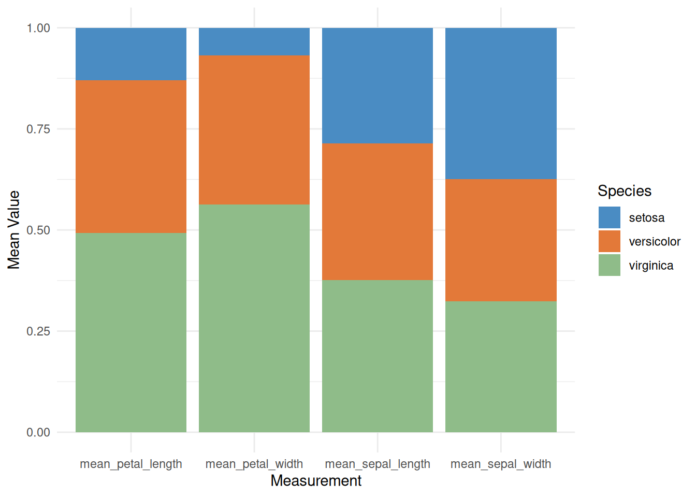
This percentage-stacked bar chart displays the relative averages of different iris species (setosa, versicolor, and virginica) across various measurements, such as sepal length, sepal width, petal length, and petal width. By using a stacked fill method, the chart visually shows the relative contribution of each species to each measurement, helping us understand the characteristic differences between species. This visualization facilitates the identification of key characteristics of each species and aids in further classification and comparative analysis.
1.4 Custom grouped bar chart
You can customize the image to make the graphic look more personalized. In the example below, the following customizations were made:
- Add a title
- Use a theme
- Change the color palette
- Customize the axis title
- Change the font size
# Custom grouped bar chart
p <- ggplot(iris_means_long, aes(fill=Species, y=Value, x=Measurement)) +
geom_bar(position="stack", stat="identity") +
scale_fill_viridis(discrete = TRUE) + # Palette
labs(title = "Grouped Barchart of Iris Means", # title
x = "Measurement",
y = "Mean Value") + # Axis title
theme_ipsum() + # theme
theme(axis.text.x = element_text(size = 10)) + # Font size
xlab("")
p
This grouped bar chart displays the average values of three iris species (setosa, versicolor, and virginica) in the iris dataset across four different measures: sepal length, sepal width, petal length, and petal width. For each measure, the average values for the three flowers are displayed side-by-side in a bar chart. Custom images enhance the visual appeal of the graph and improve the readability and comparability of the data.
- Add numerical labels
Use geom_text() to add numerical labels.
# Add numerical labels
p <- ggplot(iris_means_long, aes(fill = Species, y = Value, x = Measurement)) +
geom_bar(position = "stack", stat = "identity") +
scale_fill_viridis(discrete = TRUE) +
labs(title = "Grouped Barchart of Iris Means",
x = "Measurement",
y = "Mean Value") +
theme_ipsum() +
theme(axis.text.x = element_text(size = 10)) +
xlab("") +
geom_text(aes(label = round(Value, 2)),
position = position_stack(vjust = 0.5),
color = "white",
size = 4)
p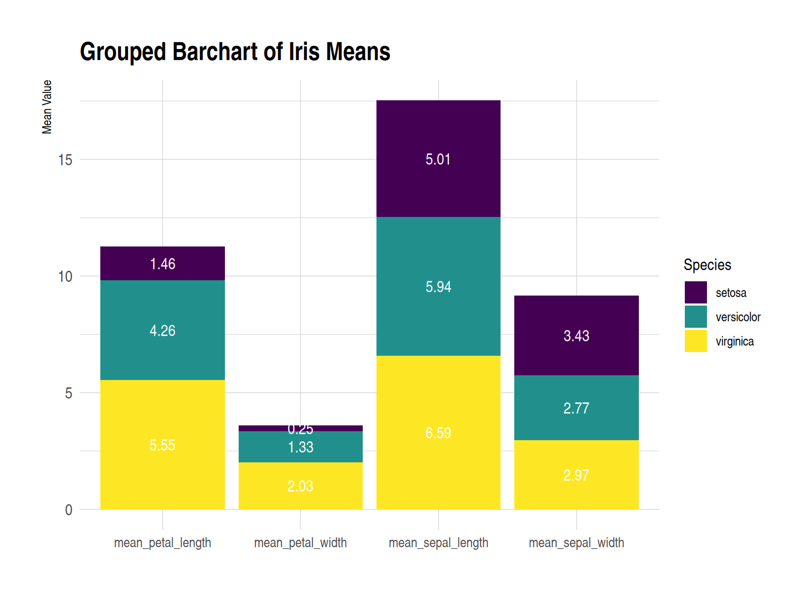
This grouped bar chart displays the average values (sepal length, sepal width, petal length, and petal width) of three iris species (setosa, versicolor, and virginica) in the iris dataset across four different measurements. Under each measurement, the average values for the three species are shown in a side-by-side bar chart. Numerical labels enhance the data’s visual appeal and readability.
1.5 Faceted bar chart
Faceted bar charts can be used instead of stacked or grouped bar charts. The facet_wrap() function makes drawing faceted bar charts very simple.
# Faceted bar chart
p <- ggplot(iris_means_long, aes(fill = Species, y = Value, x = Measurement)) +
geom_bar(position = "dodge", stat = "identity") +
labs(x = "Measurement",
y = "Mean Value") +
facet_wrap(~Species) +
theme_minimal() +
scale_fill_manual(values = c("#F1C89A", "#E79397", "#A797DA")) +
theme(axis.text.x = element_text(size = 6),
strip.text = element_blank()) +
xlab("")
p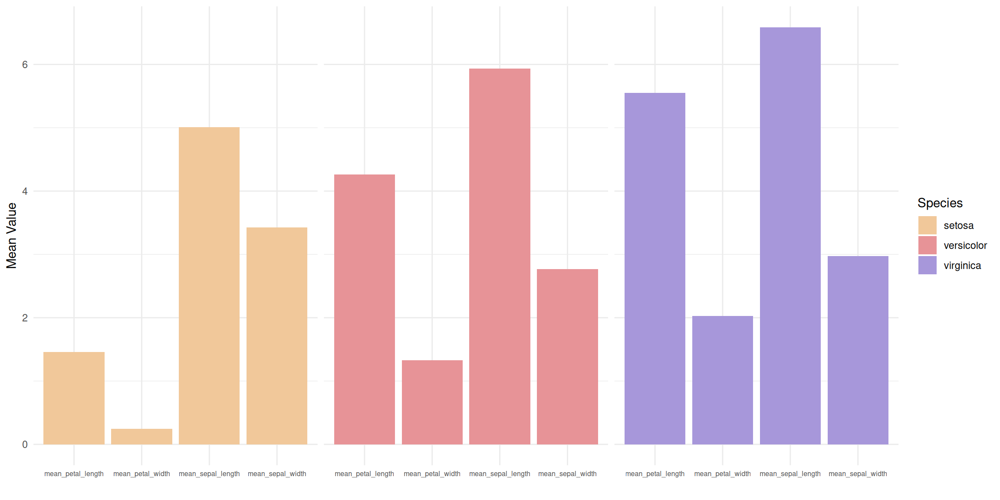
This faceted bar chart divides the data for three different flower species (setosa, versicolor, and virginica) into three independent subplots, each showing the average values for the species across four measurements. Within each subplot, the four measurements (calyx length, calyx width, petal length, and petal width) are presented as side-by-side bars, allowing for a clearer analysis of the differences in each measurement within the species.
2. ggplot2 (using TCGA data)
The ggplot2 package is probably the best choice for building grouped and stacked bar charts. The input dataframe needs to have two categorical variables, which will be passed to the x and fill parameters of the aes() function. Switching from grouped to stacked charts is very easy thanks to the position parameter.
2.1 Grouped bar chart
# Grouped bar chart
p <- ggplot(mean_expression_long, aes(fill = Measurement, y = Mean_Value, x = Gene)) +
geom_bar(position = "dodge", stat = "identity") +
labs(x = "Gene",
y = "Mean Value") +
theme_minimal()
p
This grouped bar chart shows the average expression levels of different genes (PIK3CA, KRAS, TP53, and HER2) in tumor and normal samples from the TCGA-STAD.star_counts dataset. Different fill colors distinguish tumor and normal samples, facilitating comparison of gene expression differences between the two states. This visualization helps reveal the potential roles of genes in tumor biology and provides important information for future research.
2.2 Stacked Bar Chart
# Stacked Bar Chart
p <- ggplot(mean_expression_long, aes(fill = Measurement, y = Mean_Value, x = Gene)) +
geom_bar(position = "stack", stat = "identity") +
labs(x = "Gene",
y = "Mean Value") +
theme_minimal()
p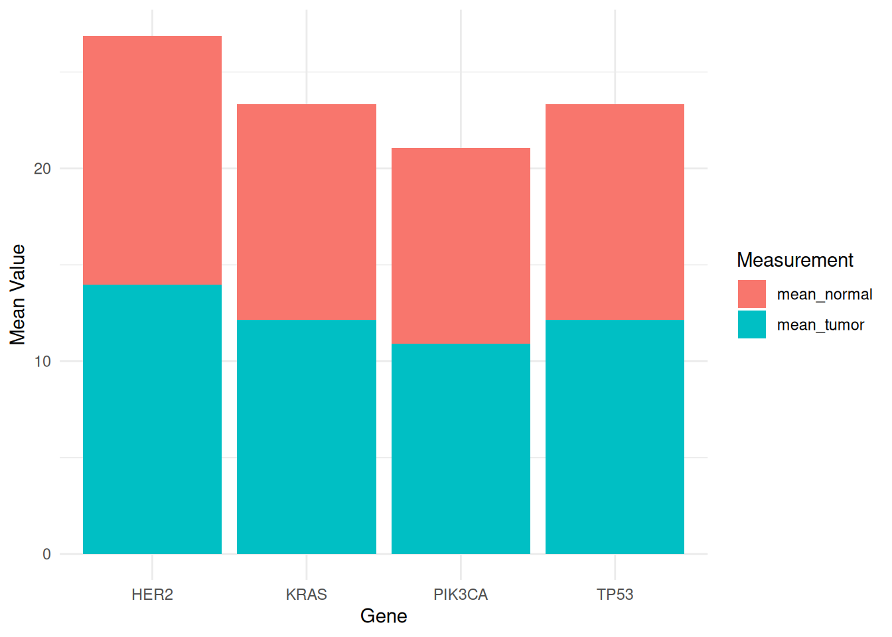
This stacked bar chart displays the mean expression levels of different genes (PIK3CA, KRAS, TP53, and HER2) in tumor and normal samples from the TCGA-STAD.star_counts dataset. Tumor and normal samples are distinguished by different fill colors to facilitate comparison of gene expression differences between the two states. The stacked bar chart also allows comparison of the overall mean values of different measurements, as well as the relative contribution of each species to each measurement.
3. Base R
Use built-in functions in R to create grouped and stacked bar charts.
3.1 Grouped bar chart
The input dataset must be a matrix of numbers. Each group is a column. Each subgroup is a row. The barplot() function will recognize this format and group the data automatically. The beside parameter allows you to switch between grouped bar charts and stacked bar charts.
# Grouped bar chart
barplot(iris_matrix,
col = colors()[c(23, 89, 12)],
border = "white",
font.axis = 2,
beside = TRUE,
legend.text = rownames(iris_matrix),
ylab = "Mean Value",
font.lab = 2)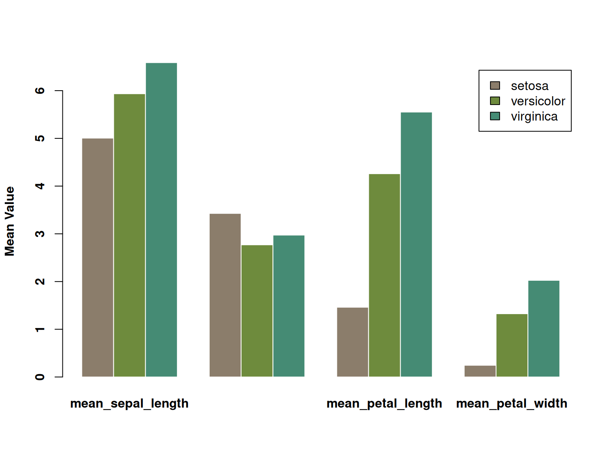
This grouped bar chart displays the average values (calyx length, calyx width, petal length, and petal width) of three iris species (setosa, versicolor, and virginica) across four different measures. Each measure is represented by three bars side-by-side, each corresponding to the average value of one of the three species. The three species are distinguished by color, and the chart visually illustrates their differences across the various measures. Significant differences in certain characteristics between the different species are clearly visible.
3.2 Stacked Bar Chart
Stacked bar charts are very similar to grouped bar charts. The subgroups are simply stacked on top of each other, rather than displayed side-by-side. Stacked bar charts are the default option for the barplot() underlying function in R, so you don’t need to use the beside parameter.
# Stacked Bar Chart
barplot(iris_matrix,
col = colors()[c(23, 89, 12)],
border = "white",
font.axis = 2,
legend.text = rownames(iris_matrix),
ylab = "Mean Value",
font.lab = 2)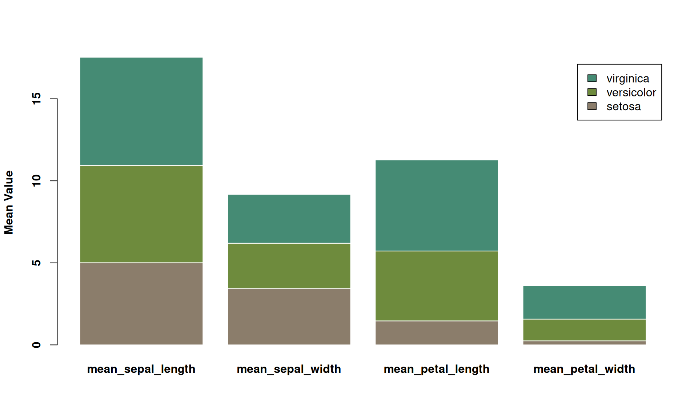
This is a stacked bar chart showing the average values of three iris species (setosa, versicolor, and virginica) across four different measurements (calyx length, calyx width, petal length, and petal width). Each bar represents a measurement, and the different colors within the bars represent the contribution of each species to the average. This stacked bar chart allows for comparison of the overall mean values across different measurements, as well as the relative contribution of each species to each measurement.
3.3 Percentage stacked bar chart
A percentage stacked bar chart shows the evolution of the proportion of each subgroup, with the sum always equal to 100%. In basic R, the percentages need to be calculated manually using the apply() function. It’s simpler to plot a percentage stacked bar chart using ggplot2.
# Percentage stacked bar chart
coul <- brewer.pal(3, "Pastel2")
barplot(iris_percentage,
col = coul,
border = "white",
ylab = "Mean Value",
legend.text = rownames(iris_percentage)) 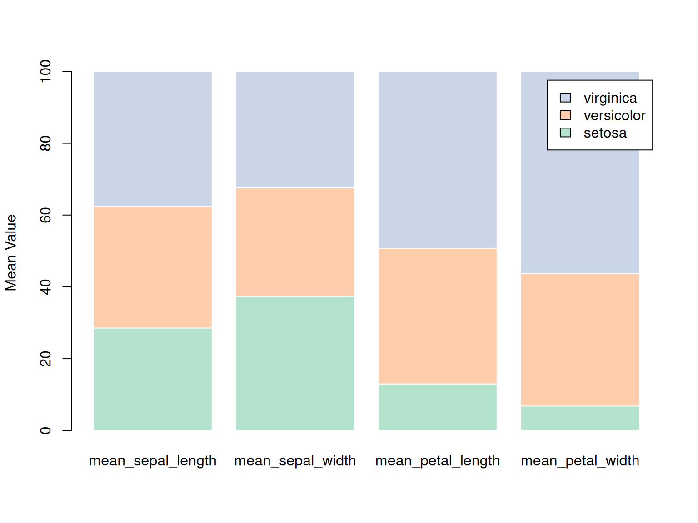
This stacked bar chart shows the percentage distribution of three iris species (setosa, versicolor, and virginica) across four features (calyx length, calyx width, petal length, and petal width) in the iris dataset. Each bar represents a specific feature, and the color represents a different species. By stacking the species data together, the chart reflects the proportion of each species across the various features. The chart shows that virginica has a larger proportion in petal-related features, while setosa has a larger proportion in calyx width. This chart clearly demonstrates the relative performance of each species across the various features.
Applications
1. Grouped bar chart
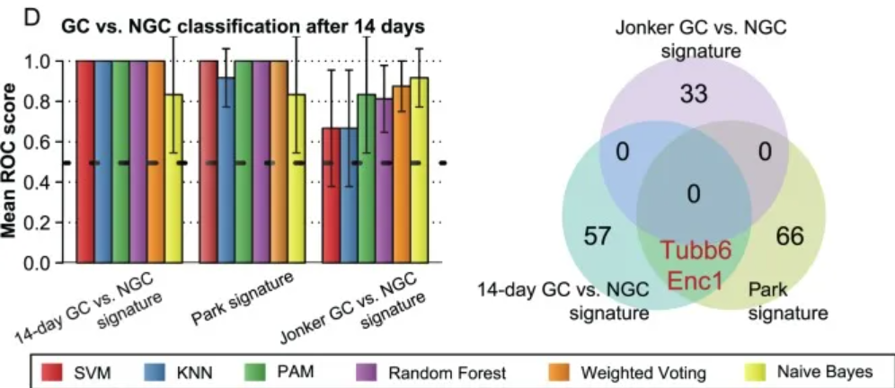
Performance comparison with known features in the literature. [1]
2. Stacked bar chart

Localization of MamI-GFP in several mutants and determination of complementation/localization of mutant MamL-GFP. [2]
3. Circular stacked bar chart

Tissue-specific proteins in healthy blood plasma. [3]
4. Flow graph
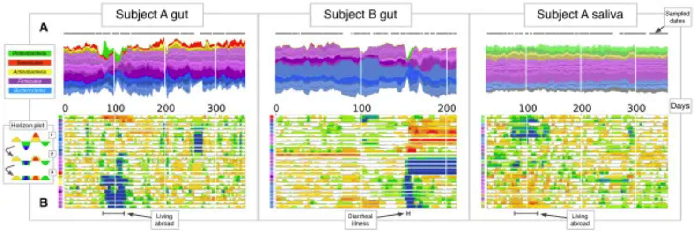
Gut and salivary microbiota dynamics of two subjects were studied over a period of more than one year. (A) Flow plot showing OTU fractional abundance over time. Each flow represents an OTU, and flows are grouped by phylum: Firmicutes (purple), Bacteroidetes (blue), Proteobacteria (green), Actinobacteria (yellow), and Tenericutes (red). Flow width reflects the relative OTU abundance at a given time point. The time points sampled are represented by gray dots on each flow plot. (B) Horizontal plot showing the abundance of most common OTUs over time. Horizontal plots allow for rapid visual comparisons between numerous time series. The plot is created by first centering each OTU time series at the median, then dividing the curves into colored bars with widths equal to the absolute deviation of the median. Next, the colored bars are overlaid and negative values are mirrored upwards. Thus, warmer areas represent the date range where taxa exceed the median abundance, while cooler areas represent the range where taxa are below the median abundance. The colored squares on the vertical axis correspond to the flow colors in (A). [4]
Reference
[1] Eichner J, Kossler N, Wrzodek C, Kalkuhl A, Bach Toft D, Ostenfeldt N, Richard V, Zell A. A toxicogenomic approach for the prediction of murine hepatocarcinogenesis using ensemble feature selection. PLoS One. 2013 Sep 10;8(9):e73938. doi: 10.1371/journal.pone.0073938. PMID: 24040119; PMCID: PMC3769381.
[2] Raschdorf O, Forstner Y, Kolinko I, Uebe R, Plitzko JM, Schüler D. Genetic and Ultrastructural Analysis Reveals the Key Players and Initial Steps of Bacterial Magnetosome Membrane Biogenesis. PLoS Genet. 2016 Jun 10;12(6):e1006101. doi: 10.1371/journal.pgen.1006101. PMID: 27286560; PMCID: PMC4902198.
[3] Malmström E, Kilsgård O, Hauri S, Smeds E, Herwald H, Malmström L, Malmström J. Large-scale inference of protein tissue origin in gram-positive sepsis plasma using quantitative targeted proteomics. Nat Commun. 2016 Jan 6;7:10261. doi: 10.1038/ncomms10261. PMID: 26732734; PMCID: PMC4729823.
[4] David LA, Materna AC, Friedman J, Campos-Baptista MI, Blackburn MC, Perrotta A, Erdman SE, Alm EJ. Host lifestyle affects human microbiota on daily timescales. Genome Biol. 2014;15(7):R89. doi: 10.1186/gb-2014-15-7-r89. Erratum in: Genome Biol. 2016 May 31;17(1):117. doi: 10.1186/s13059-016-0988-y. PMID: 25146375; PMCID: PMC4405912.
[5] Wickham, H. (2016). ggplot2: Elegant Graphics for Data Analysis. Springer-Verlag New York. https://ggplot2.tidyverse.org
[6] Garnier, S. (2018). viridis: Colorblind-Friendly Color Maps for R. https://cran.r-project.org/package=viridis
[7] Wickham, H., François, R., Henry, L., Müller, K. (2023). dplyr: A Grammar of Data Manipulation. https://cran.r-project.org/package=dplyr
[8] Wickham, H., Henry, L. (2023). tidyr: Tidy Messy Data. https://cran.r-project.org/package=tidyr
[9] Müller, K. (2023). tibble: Simple Data Frames. https://cran.r-project.org/package=tibble
[10] Neuwirth, E. (2023). RColorBrewer: ColorBrewer Palettes. https://cran.r-project.org/package=RColorBrewer
[11] Rudis, B. (2022). streamgraph: Create Streamgraphs and Streamgraph htmlwidgets. https://cran.r-project.org/package=streamgraph